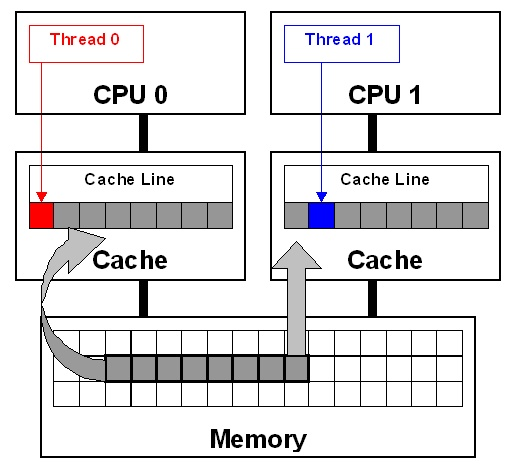

伪共享和Java缓存行
对于多线程编程来说，一般要注意线程安全的问题，如果是要实现超高并发的中间件，特别是需要多线程处理列表、数组和队列的时候，就需要注意伪共享的问题。否则可能无法发挥多线程的优势，性能可能比单线程还差。
伪共享
介绍伪共享前先说说 SMP、Cache、MESI 几个概念。
SMP 系统
操作系统主要分下面两种：
- SMP——Symmetric Multi-Processing (SMP)，即对称多处理器结构
- AMP——Asymmetric Multi-Processing (AMP) ，非对称多处理器结构
SMP的特征是：只有一个操作系统实例，运行在多个CPU上，每个CPU的结构都是一样的，内存、资源共享。这种系统有一个最大的特点就是共享所有资源。
AMP的特征是：多个CPU，各个CPU在架构上不一样，每个CPU内核运行一个独立的操作系统或同一操作系统的独立实例，每个CPU拥有自己的独立资源。这种结构最大的特点在于不共享资源。
我们平时使用的机器基本都是 SMP 系统。
Cache
CPU 和主内存之间的运算速度是差异巨大的，在现今的 SMP 系统 中，会在 CPU 和主存间设置三级高速缓存，L1、L2 和 L3，读取顺序由先到后。可以简单理解为，L1 Cache分为指令缓存和数据缓存两种，L2 Cache只存储数据，L1 和 L2 都是每个核心都有，而 L3 被多核共享。
缓存系统中是以缓存行（cache line）为单位存储的。缓存行是2的整数幂个连续字节，一般为32-256个字节。最常见的缓存行大小是64个字节。
MESI
MESI 是一致性协议，研究过 Java volatile 可能会比较熟悉，因为L1 L2是每个核心自己使用，而L3一般是多核共享，而不同核心又可能涉及共享变量问题，所以各个高速缓存间势必会有一致性的问题。MESI就是解决这些问题的一种协议或规范。
下面是关于 MESI 的一段说明：
在MESI协议中，每个Cache line有4个状态，可用2个bit表示，它们分别是:
- M(Modified)：这行数据有效，数据被修改了，和内存中的数据不一致，数据只存在于本Cache中；
- E(Exclusive)：这行数据有效，数据和内存中的数据一致，数据只存在于本Cache中；
- S(Shared)：这行数据有效，数据和内存中的数据一致，数据存在于很多Cache中；
- I(Invalid)：这行数据无效。
什么是伪共享
到现在什么是伪共享，为什么它会影响到性能呢？ 先看一个图:

从图中可看到，thread0,thread1 分别由 core0，core1 调度，两线程都想更新彼此独立的两个变量，但是由于两个变量位于同一个cache line中，根据MESI cache line 的状态应该都是 Shared，而对于同一 cache line 的操作，core 间必须争夺主导权（ownership），如果 core0 抢到了，thread0 因此去更新cache line，会导致core1中的 cache line 状态变为 Invalid，随后 thread1 去更新时必须通知 core0 将 cache line 刷回主存，然后它再从主内存中 load 该 cache line 进高速缓存之后再进行修改，但该修改又会使得 core0 的 cache line 失效，thread0 重复上演 thread1 历史，这样导致了高速缓存并未起到应有的作用，反而影响了性能。
这就是对称多处理器（SMP）系统中一个著名的性能问题：伪共享。
Java 缓存行
对于出现伪共享的问题，根据上文介绍出现的原因，我们可以采用填充的方式来保证某个热点对象被隔离在不同的缓存行中，从而避免了多线程互相抢同一个 cache line，这样性能也就不会造成影响。
Java 8 方案
Java的各个版本在减少伪共享的做法都有区别，Java 8 以前的版本可以采用填充的方案，这里只具体介绍 Java 8 的实现方案。
JAVA 8中添加了一个 @Contended 的注解，对某字段加上该注解则表示该字段会单独占用一个缓存行（Cache Line）。
举个例子：
1 | public final class FalseSharing implements Runnable { |
1 |
|
这个例子是两个线程同时对同一个数组进写操作，见 runTest 函数 和 FalseSharing 类 的 run 函数。VolatileLong 类的 value 被 volatile 修饰，
在 run 函数中没有线程安全的问题。
测试情况：
当在 VolatileLong 类上加了 @Contended 注解时，输出：
duration = 3581736100
当把 VolatileLong 类上的 @Contended 注解删除时，输出：
duration = 20545682900
可以看到，不加@Contended 注解时，所消耗的时间大概是加 @Contended 注解 时的5倍。
注意 @Contended 注解要生效，需要加上虚拟机参数 -XX:-RestrictContended。
对于伪共享的问题呢，解决方案本质上就是填充，某种程度就是以空间换时间，这值得我们去思考。
伪共享的问题是程序性能的问题，虽然很重要，但优先级不要拔高，不要过早优化。